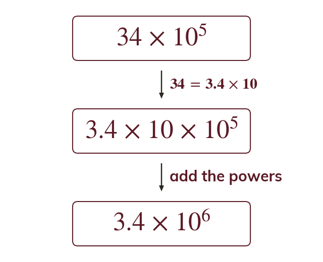
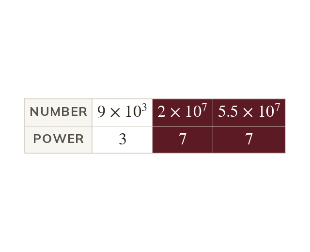
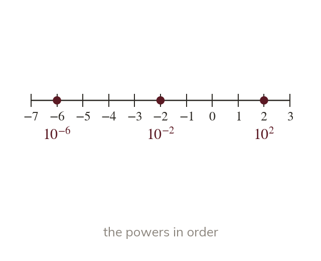

When a is or more
In a is too big. Writing as adds one to the power. So
is not in standard form, because is not less than
Writing as adds one to the power, so
Writing as adds one to the power, so
A virus, a grain of sand and a planet can all be written in standard form. To say which is bigger, you need to read the power first.
Work down the page at your own pace. Write every answer in your book first, then click to check it.
Read each card, then follow the worked examples one step at a time.

In a is too big. Writing as adds one to the power. So
When a is less than multiply it by
Then take one off the power. So
Pick an answer. If it's wrong, the feedback tells you which mistake it was.
Read each card, then follow the worked examples one step at a time.

Numbers in standard form are compared by their powers of first. The value of a decides only when the powers are equal.

A negative power makes a number between and
Order the powers like directed numbers: is smaller than
Pick an answer. If it's wrong, the feedback tells you which mistake it was.
Finished? Next lesson: 10.10.3 Calculating in Standard Form.
Log in, then search for a code to practise that skill.